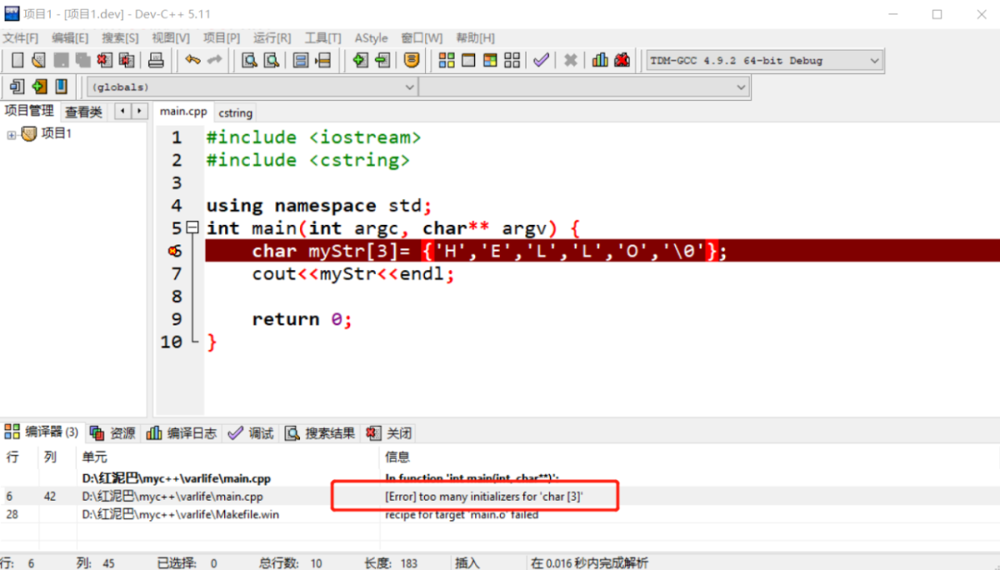
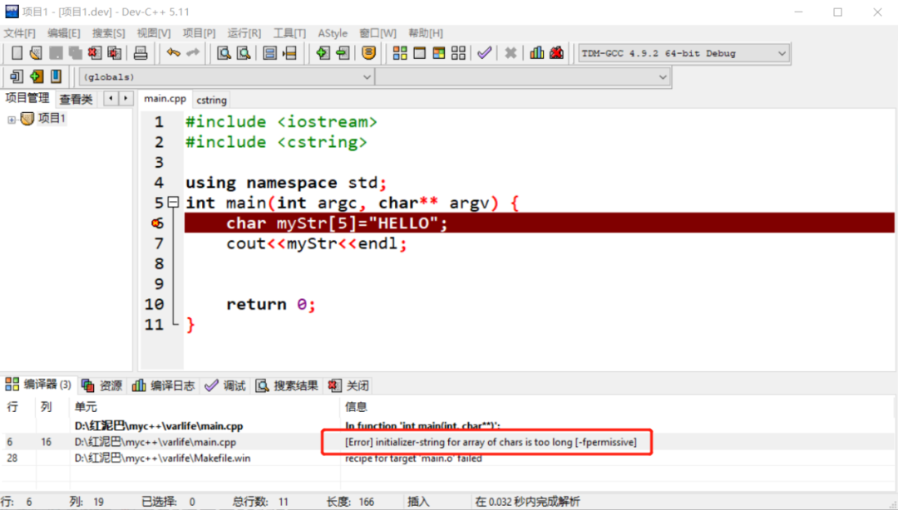
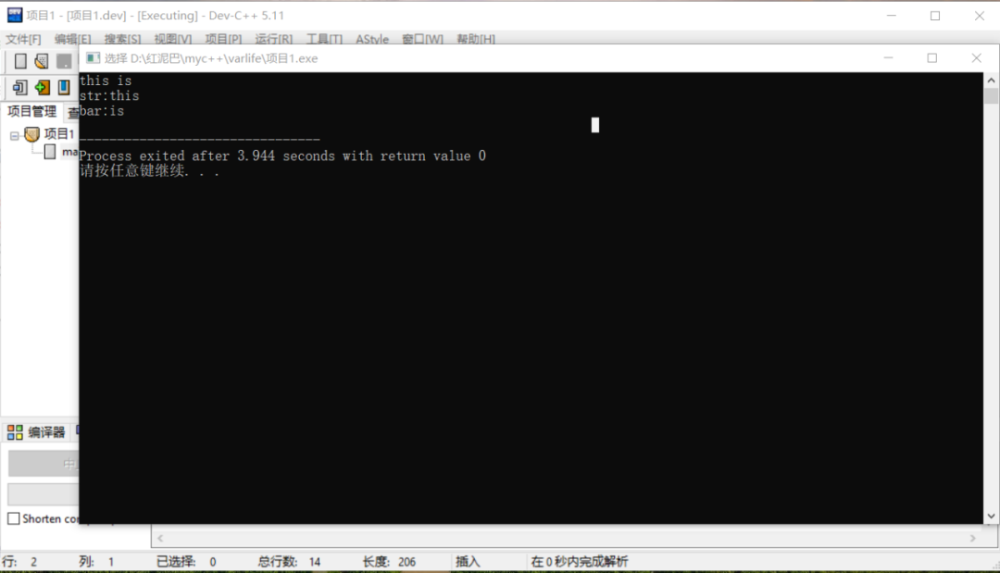
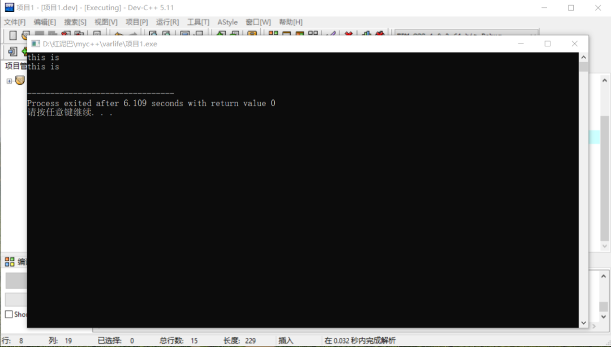
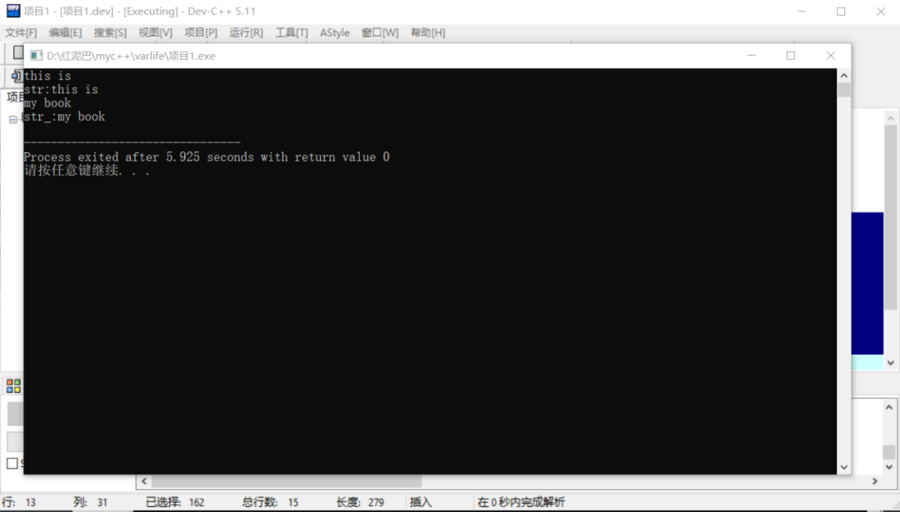

C++ 练气期之细聊字符串
1. 概念
程序不仅仅用于数字计算，现代企业级项目中更多流转着充满了烟火气的人间话语。这些话语，在计算机语言称为字符串。
从字面上理解字符串，类似于用一根竹签串起了很多字符，让人很容易想起冰糖葫芦。
字符串的基本组成元素是字符，可以认为字符串就是字符类型的数组。
量变总会引起质变，字符串是由字符的量变演化出的新类型， 2 者在数据含义和存储结构都有着本质上区别。
1.1 数据含义
C++把字符类型当成整型数据类型看待。如下代码，当把A赋值给myChar时， 编译器先获取A的底层 ASCII 编码，然后再把编码值赋值给myChar。
如下代码，编译器先找到97对应的字符，然后再赋值给myChar，字符类型和整型类型语法层面有差异，在底层，C++一视同仁。
所以，用于整型数据类型的运算符都可以用于char类型。
char myChar='B';
char myChar_='A';
int res=myChar+myChar_;
cout<<"加操作："<<res<<endl;
res=myChar-myChar_;
cout<<"减操作："<<res<<endl;
res=myChar*myChar_;
cout<<"乘操作："<<res<<endl;
res=myChar/myChar_;
cout<<"除操作："<<res<<endl;
bool is=myChar>myChar_;
cout<<"关系操作："<<is<<endl;
输出结果：
虽然，字符串可看成是字符组成的数组，但是，应该把字符串当成一个独立的整体，其数据含义更贴近现实意义：
- 因
字符是单一词，所能表达的语义非常有限。 字符串则是由许多字符组成的语句，可用来表达丰富的语义。如：可以是姓名、可以是问候、可以情感表达、可以是提示……根据使用的上下文环境，字符串有其自己特定的现实意义。
1.2 存储结构
字符常量必须用单引号包起来，字符直接存储在变量中。
字符串的存储方案比字符复杂很多，C++支持两种字符串的存储方案：
C语言风格的存储。C++语言的对象存储。
下面深入了解这 2 种存储方案的区别。
2. C 风格的字符串
C++可以直接延用C语言中的2种字符串存储方案：
2.1 数组
数组存储能较好地诠释字符串是由字符所组成的概念。
使用数组存储时，并不能简单如下代码所示。对于开发者而言，可能想表达的是输出一句HTLLO问候语。但在实际执行时，输出时可能不仅只是HELLO。
为什么会输出更多信息？
因为cout底层逻辑在输出字符数组时，会以一个特定标识符\0为作为结束标志。cout在输出 myStr字符数组的数据时，如果没有遇到开发者提供的\0结束符号，则会在数组的存储范围之外寻找\0符号。
上述代码虽然能得到HELLO，那是因为在未使用的存储空间中，\0符号很常见。
显然，不能总是去碰运气。所以，在使用字符数组时描述字符串时，则需要在适当位置添加字符串结束标识符\0。
因结束符占用了一个存储位，HELLO需要5个存储位，在声明数组时，需要注意数组的实际长度为 6。
执行下面的代码，查看输出结果，想想为什么输出结果是HEL？
原因很简单，cout在遇到第一个 \0时，就认定字符串到此结束了。
这里有一个问题，如果实际的字符个数大于数组声明的长度，会出现什么情况？
如果出现上述代码，说明，你的数组没有学太好。C++规定在使用{}进行字面值初始化数组时，{}内的实际数据个数不能大于数组声明的长度。

当不确定字符串的长度时，可以采用省略[]中数字的方案。
数组存储方案同样具有数组所描述的操作能力，最典型的就是使用下标遍历数组。
输出结果：
在使用上述代码时，有 2 个地方需要注意：
- 当下标定位到
\0数据位时，并不能识别\0是字符串结束符，它只是纯粹当成一个一个字符输出，不具有字符串语义。
输出结果：
- 因使用静态数组声明方案，可以动态计算数组的长度。
char myStr[8]= {'H','E','L','L','O','\0','M','Y'};
cout<<"数组的长度:"<<sizeof(myStr)<<endl;
for(int i=0;i<sizeof(myStr);i++){
cout<<myStr[i]<<endl;
}
输出结果：
使用
sizeof(myStr)计算出来的是创建数组时指定的物理存储长度。
所以，这里要注意：
- 通过
结束符描述字符串是编译器层面上的约定。 - 遍历时，实质是底层指针移动，这时，编译层面的字符串概念在这里不复存在。也就是说不存在遇到
\0，就认为输出结束。
2.2 字符串常量
上述字符串的描述方式，略显繁琐，因需要时时注意添加\0。C当然也会想到这一点，可以使用字符串常量简化字符串数组的创建过程。
字符串常量需要使用双引号括起来。
当执行如下代码时，会出现错误。

错误提示，数组长度不够存储给定的数据。可能要问！
数组长度是5，实际数据HELLO的长度也是5，不是刚刚好吗。
别忘记了，完整的字符串是包括结束符\0的。在使用字符常量赋值时，编译器会在字符串常量的尾部添加\0，再存储到数组中，所以数组的长度至少是：字符串常量的长度+1。
如下的代码方能正确编译运行：
字符串常量只是上述{}赋值的语法简法版，其它的操作都是相同的，如循环遍历。
注意，如下的代码是错误的。
"S"表示一个字符串，至少包括了'S'和'\0' 2 个字符，更重要的是 "S"返回的是内存地址。
2.3 字符串操作
C语言风格的字符串提供了cstring库，此库提供大量函数用来操作字符串，常见函数如下：
strcat：字符串拼接。strcpy：字符串复制。strcmp：字符串比较。strstr：字符串查找。- ……
下面介绍几个字符串的常见操作。
2.3.1 复制操作
C++中数组之间是不能直接赋值的，如下是错误的：
可以使用cstring库中的 strcpy 函数：
#include <iostream>
#include <cstring>
using namespace std;
int main(int argc, char** argv) {
char myStr[6]="HELLO";
char myStr_[6];
strcpy(myStr_,myStr);
cout<<myStr_<<endl;
return 0;
}
strcpy需要 2 个参数：
- 目标字符串指针。
- 源字符串指针。
其作用是，把源字符串复制给目标字符串。
2.3.2 长度操作
使用 strlen函数计算字符串的长度。
和sizeof计算出来的长度区别：
sizeof创建数组时，分配到的实际物理空/间的长度。
输出结果：
strlen计算出的是字符数组中字符串的实际长度，即遇到\0结束符前所有字符的长度。如下代码：
输出结果是：3。\0结束前的字符串是HEL。
2.3.3 拼接操作
字符串常量之间可以使用空白（空格、换行符、制表符）字符自动完成拼接。
需要注意的地方是，第一个字符串常量和第二个字符串常量的拼接处直接连接，中间不保留空白符。
使用strcat进行拼接。
#include <iostream>
#include <cstring>
using namespace std;
int main(int argc, char** argv) {
char names[10]="Hello";
char address[10]="changsha";
strcat(names,address);
cout<<names;
return 0;
}
//输出：Hellochangsha
strcat是把第二字符串连接到第一个字符串后尾部。
2.3.4 字符串比较
字符能够直接比较，字符串则不能。如果相互之间有比较的需求时，可以使用 strcmp 函数。
#include <iostream>
#include <cstring>
using namespace std;
int main(int argc, char** argv) {
char names[10]="zs";
char names_[10]="ls";
cout<<strcmp(names,names_);
return 0;
}
//输出结果：1
返回值的语义：
- 如果返回值为小于
0，则names小于address。 - 如果返回值为 等于
0，则names等于address。 - 如果返回值大于
0，则names大于address。
2.3.5 子字符串查找
在原子符串中查找给定的子字符串出现的位置，返回此位置的指针地址。
#include <iostream>
#include <cstring>
using namespace std;
int main(int argc, char** argv) {
char srcStr[15]="Hello World";
char subStr[5]="llo";
cout<<strstr(srcStr,subStr);
return 0;
}
//输出：llo World
如果没有查找到，则返回null。
cstring库提供了大量处理字符串的函数，如大小写转换函数tolower和toupper等。本文仅介绍几个常用函数，需要时，可查阅文档，其使用并不是很复杂。
3. C++字符串对象
C++除了支持C风格的字符串，因其面向对象编程的特性，内置有string类，可以使用此类创建字符串对象。
string类定义在string头文件中。
如下代码可以初始化字符串对象：
string为了支持uncode字符编码，底层为每一个字符提供了1~4个字节的存储空间。
所以，可以用来存储中文：
除了支持
char、还支持wchar_t、char16_t、char32_t数据类型。
在string类中封装了很多处理字符串的相关函数（方法），在cstring库中可以找到对应的函数。因得益于类设计的优秀特性，string类中封装的功能体相比较cstring库，更丰富、更全面。
下面介绍几个常用的功能，其它可以查阅文档。
获取字符串的常规信息：如长度、是否为空……
string str="Hello World";
cout<<str.size()<<endl;
cout<<str.length()<<endl;
//是否为空
cout<<str.empty()<<endl;
//能存储的最大长度
cout<<str.max_size()<<endl;
//容量
cout<<str.capacity()<<endl;
输出结果：
数据维护（增、删除、改、查）方法：
clear：清除所有内容。
insert：插入字符。
string str="Hello World";
string str_="Hi";
//第一个参数指定插入位置，第二参数指定需要插入的字符串
str.insert(3,str_);
cout<<str<<endl;
//输出结果：HelHilo World
erase：删除指定范围内的所有字符。
string str="Hello World";
//第一个参数：指定删除的起始位置，第二个参数：指定删除的结束位置
string str_= str.erase(1,3);
cout<<str_<<endl;
//输出：Ho World
push_back、append追加字符和字符串。
string str="Hello World";
//只能追加字符串，不能追加字符
str.append("OK");
cout<<str<<endl;
//只能以字符为单位追加
str.push_back('O');
cout<<str<<endl;
//输出结果：
//Hello WorldOK
//Hello WorldOKO
pop_back：删除最后一个字符。
compare：比较两个字符串。
copy：字符串的拷贝。
//源字符串
string foo("quuuux");
//目标字符串，数组形式
char bar[7];
//第一个参数，目标字符串，第二参数，向目标字符串复制多少
foo.copy(bar, sizeof bar);
bar[6] = '\0';
cout << bar << '\n';
//输出：quuuux
总结下来，字符串的存储方案有2 种：
- 数组形式。
- 字符串对象。
4. cin 输入字符串
如果需要使用交互输入方式获取用户输入的数据，可以直接使用 cin。
如上代码，如果用户输入this is，因字符串有空白字符。则会出现获取到错误数据的问题。

原因解析：
cin接受用户输入时，以用户输入的换行符作为结束标识。用户输入this is时，遇到字符串的中间空白字符（空格、制表符、换行符）时，就认定输入结束，仅把this存储到str中，并不是this is。
cin内置有缓存器，会把 is缓存起来，也就是说 cin是以单词为单位进行输入的。
当再次使用cin接受用户输入时，cin会检查到缓存器中已经有数据，会直接把is赋值给 bar变量。
如果需要以行为单位进行输入时，可以使用：
cin.get()方法。cin.getline()方法。
上述
2个方法主要用于字符串数组的赋值。
两者在使用时，都可以接受 2 个参数：
- 目标字符串。
- 用来限制输入的大小。
如下代码，能实现相同的效果。
两者也有区别，cin.get()不会丢弃用户输入字符串时的结束符。在连续使用 cin.get有可能出现问题，如下代码：
char str[20];
char str_[20];
//第一次输入
cin.get(str,10);
cout<<str<<endl;
//第二次输入
cin.get(str_,10);
cout<<str_<<endl;
执行效果：

第二次接受用户输入的过程根本没出现。
原因是第一次接受用户输入后，cin.get缓存了用户输入的换行符。在第二次接受用户输入时，cin会首先检查缓存器中是否有数据，发现有换行符，直接结束输入。
解决方案，手动清除缓存器的数据。
char str[20];
char str_[20];
cin.get(str,10);
cout<<str<<endl;
//不带参数的 get 方法可以清除数据
cin.get();
cin.get(str_,10);
cout<<str_<<endl;
cin.getline在接受用户输入后，不会保留换行符，所以可以用于连续输入。如下代码：
char str[20];
char str_[20];
//第一次输入
cin.getline(str,10);
cout<<"str:"<<str<<endl;
//第二次输入
cin.getline(str_,10);
cout<<"str_:"<<str_<<endl;

如果要使用cin输入一行字符串，并赋值给字符串对象，则需要使用全局 getline函数。
5. 总结
本文主要讲解了C++字符串的2种存储方案，一个是C语言风格的数组存储方案，一个是C++对象存储方案。
因存储方案不同，其操作函数的提供方式也不相同。